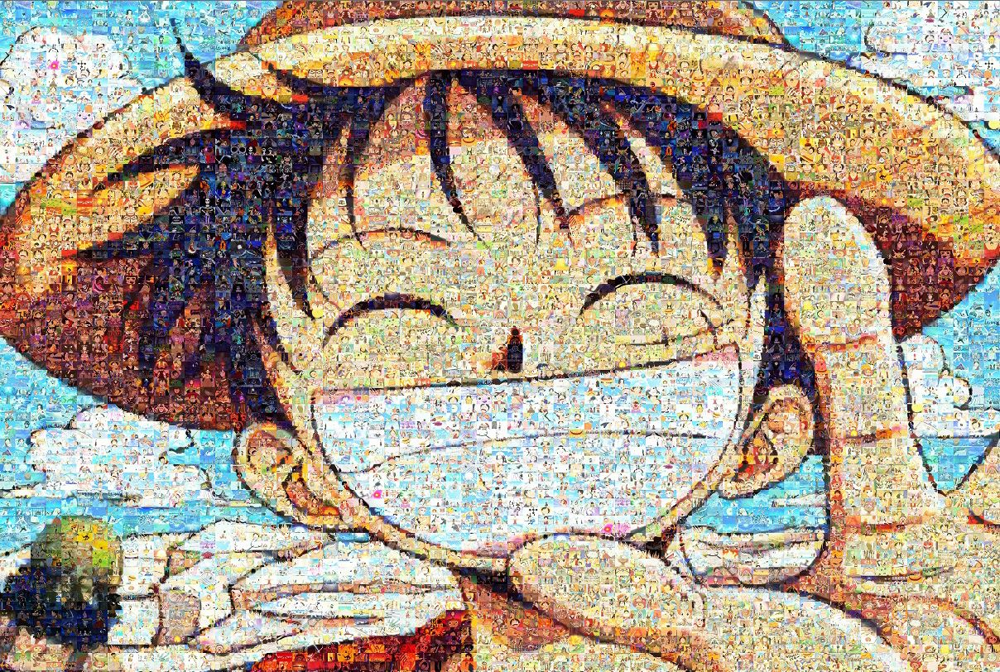
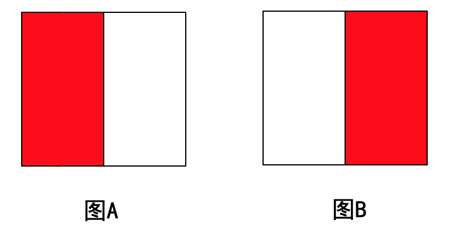
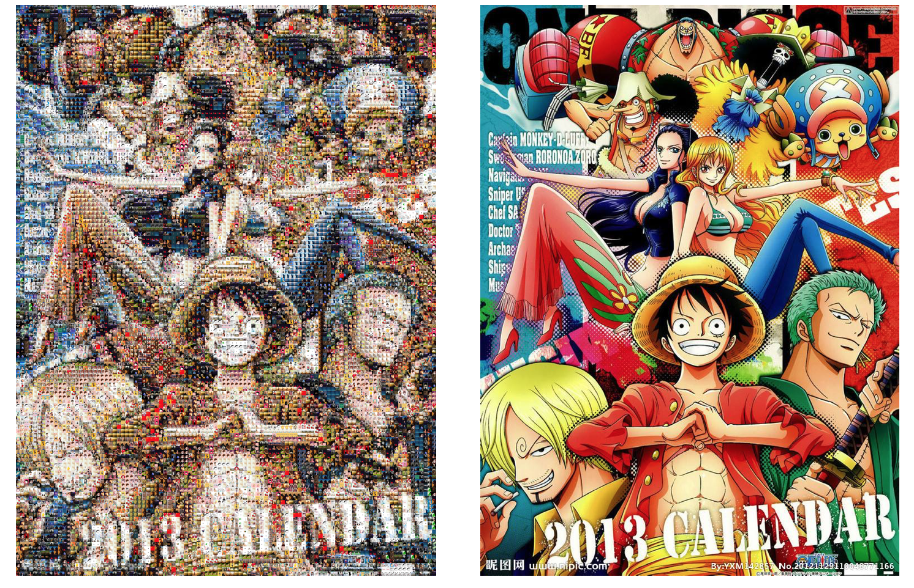
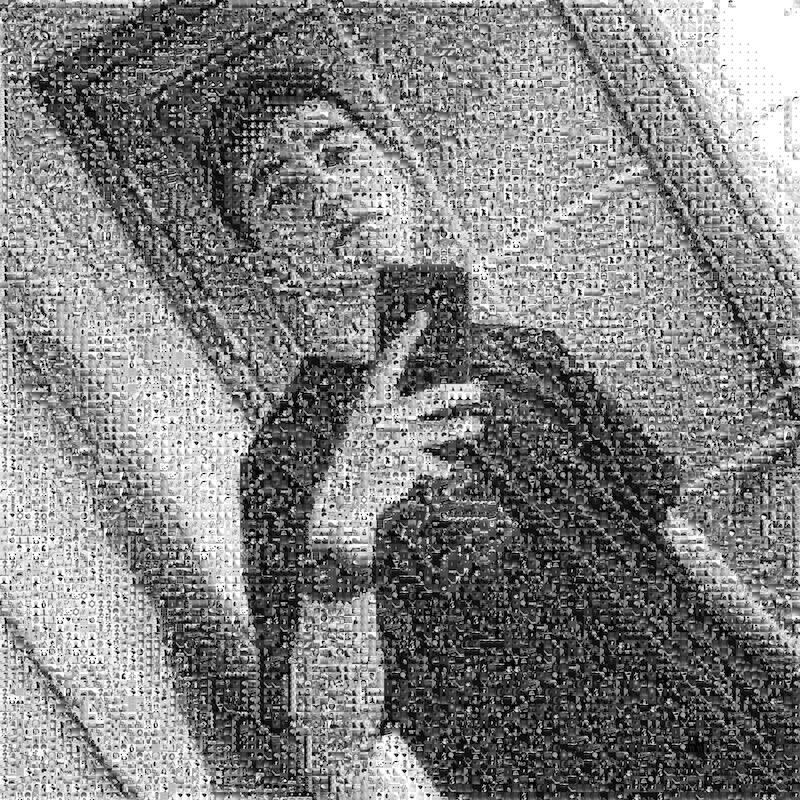
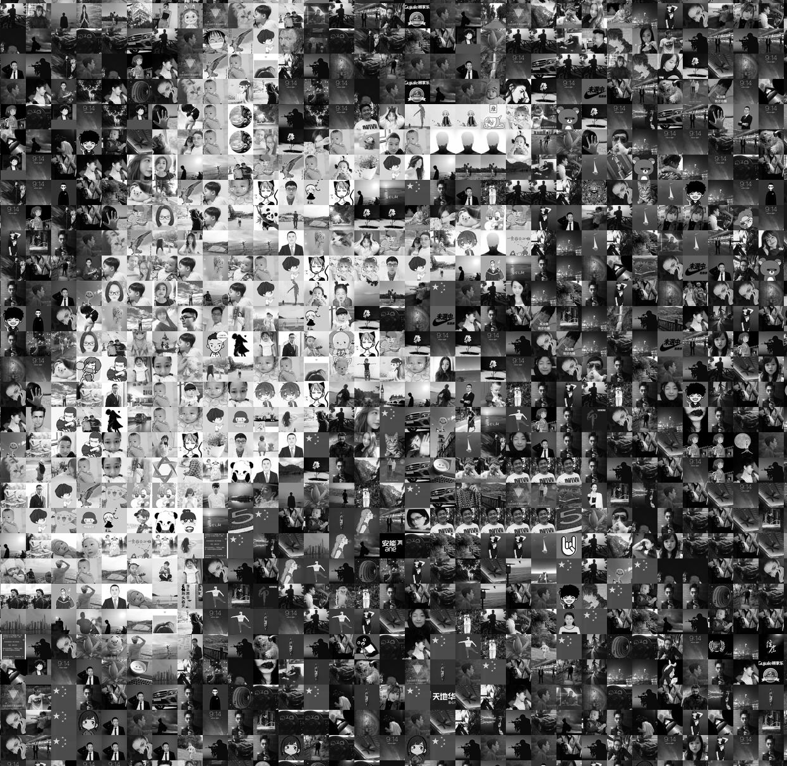
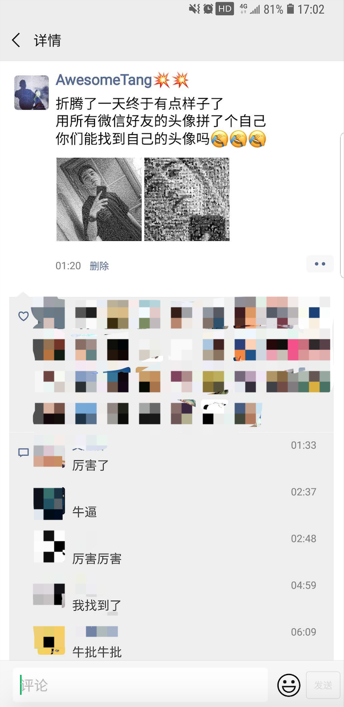

何谓马赛克拼图（千图成像），简单来说就是将若干小图片平凑成为一张大图，如下图路飞一样，如果放大看你会发现里面都是一些海贼王里面的图片。

其实整个项目很小，项目总共代码量不过100行左右。
itchat；numpy和PIL库。我这边是用的所有微信好友头像作为的数据源，你们如果有其他的数据源也可以的，可以直接跳过这步。
爬取微信好友头像我使用的是itchat，里面已经有封装好了的API，直接调用就可以，将所有的好友头像保存到一个文件夹供后期使用。
#!/usr/bin/env python
# -*- coding: utf-8 -*-
# @Author : AwesomeTang
# @File : Wechat_Icon.py
# @Version : Python 3.7
# @Time : 2019-06-29 23:35
import os
import itchat
itchat.login()
friends = itchat.get_friends(update=True)
base_folder = 'wechat'
if os.path.isdir(base_folder):
pass
else:
os.mkdir(base_folder)
for item in friends:
img = itchat.get_head_img(item['UserName'])
# 使用用户昵称作为文件名
path = os.path.join(base_folder, '{}.jpg'.format(item['NickName'].replace('/', '')))
with open(path, 'wb') as f:
f.write(img)
print('{} 写入完成...'.format(item['NickName']))说起来好像很简单，但实际操作起来只能......
其实困难的地方很明显，那就是我们如何从一堆图片中找出最相似的那张。
我们可以分为两个步骤：
这个应该不难理解，我在代码中实现了灰度图像和RGB通道图像的筛选方法：
为什么还需要结构相似，举个例子：

如果单纯按照上述方法去判定相似，那上图中的图A和图B肯定是最相似的，所以我们不能单纯的因为两张图片中包含的颜色差不多就去判断为最相似，还需要去判断颜色的“位置”也要相似。
这部分实现方法参考了阮一峰的博客，具体逻辑如下：
np.equal()计算相同的点了，取相同位数最多的那张头像即为最相似的图片。我在代码中是先筛选颜色最接近的50张图片，然后再在这50中图片去寻找结构最相似的图片，最后实现效果如下：
RGB通道
因为图片源只有500来张，效果只能说凑合，勉强能看出来是啥。

灰度

放大之后是这个效果：

然后便能去朋友圈愉快的装逼了😎😎😎

#!/usr/bin/env python
# -*- coding: utf-8 -*-
# @Author : AwesomeTang
# @Version : Python 3.7
# @Time : 2019-06-23 13:52
from PIL import Image
import os
import numpy as np
from tqdm import tqdm
class Config:
corp_size = 40
filter_size = 20
num = 100
class PicMerge:
def __init__(self, pic_path, mode='RGB', pic_folder='wechat'):
if mode.upper() not in ('RGB', 'L'):
raise ValueError('Only accept "RGB" or "L" MODE, but we received "{}".'.format(self.mode))
else:
self.mode = mode.upper()
print('Coding for every picture in folder "{}".'.format(pic_folder))
self.mapping_table, self.pictures = self.mapping_table(pic_folder)
self.picture = self.resize_pic(pic_path).convert(self.mode)
@staticmethod
def resize_pic(pic_path):
picture = Image.open(pic_path)
width, height = picture.size
to_width = Config.corp_size * Config.num
to_height = ((to_width / width) * height // Config.corp_size) * Config.corp_size
picture = picture.resize((int(to_width), int(to_height)), Image.ANTIALIAS)
return picture
def merge(self):
width, height = self.picture.size
w_times, h_times = int(width / Config.corp_size), int(height / Config.corp_size)
picture = np.array(self.picture)
print('Corp & Merge...')
for i in tqdm(range(w_times), desc='CORP'):
for j in range(h_times):
if self.mode == 'L':
section = picture[j * Config.corp_size:(j + 1) * Config.corp_size,
i * Config.corp_size:(i + 1) * Config.corp_size]
section_mean = section.mean()
candidate = sorted([(key_, abs(np.array(value_).mean() - section_mean))
for key_, value_ in self.pictures.items()],
key=lambda item: item[1])[:Config.filter_size]
most_similar = self.structure_similarity(section, candidate)
picture[j * Config.corp_size:(j + 1) * Config.corp_size,
i * Config.corp_size:(i + 1) * Config.corp_size] = most_similar
elif self.mode == 'RGB':
section = picture[j * Config.corp_size:(j + 1) * Config.corp_size,
i * Config.corp_size:(i + 1) * Config.corp_size, :]
candidate = self.color_similarity(section)
most_similar = self.structure_similarity(section, candidate)
picture[j * Config.corp_size:(j + 1) * Config.corp_size,
i * Config.corp_size:(i + 1) * Config.corp_size, :] = most_similar
picture = Image.fromarray(picture)
picture.show()
picture.save('result.jpg')
print('Work Done...')
def structure_similarity(self, section, candidate):
section = Image.fromarray(section).convert('L')
one_hot = self.pic_code(np.array(section.resize((8, 8), Image.ANTIALIAS)))
candidate = [(key_, np.equal(one_hot, self.mapping_table[key_]).mean()) for key_, _ in candidate]
most_similar = max(candidate, key=lambda item: item[1])
return self.pictures[most_similar[0]]
def color_similarity(self, pic_slice, top_n=Config.filter_size):
slice_mean = self.rgb_mean(pic_slice)
diff_list = [(key_, np.linalg.norm(slice_mean - self.rgb_mean(value_)))
for key_, value_ in self.pictures.items()]
filter_ = sorted(diff_list, key=lambda item: item[1])[:top_n]
return filter_
@staticmethod
def rgb_mean(rgb_pic):
"""
if picture is RGB channel, calculate average [R, G, B].
"""
r_mean = np.mean(rgb_pic[:, :, 0])
g_mean = np.mean(rgb_pic[:, :, 1])
b_mean = np.mean(rgb_pic[:, :, 2])
val = np.array([r_mean, g_mean, b_mean])
return val
def mapping_table(self, pic_folder):
"""
What this function do?
1. transverse every image in PIC_FOLDER;
2. resize every image in (8, 8) and covert into GREY;
3. CODE for every image, CODE like [1, 0, 1, 1, 0....1]
4. build a dict to gather all image and its CODE.
:param pic_folder: path of pictures folder.
:return: a dict
"""
suffix = ['jpg', 'jpeg', 'JPG', 'JPEG', 'gif', 'GIF', 'png', 'PNG']
if not os.path.isdir(pic_folder):
raise OSError('Folder [{}] is not exist, please check.'.format(pic_folder))
pic_list = os.listdir(pic_folder)
results = {}
pic_dic = {}
for idx, pic in tqdm(enumerate(pic_list), desc='CODE'):
if pic.split('.')[-1] in suffix:
path = os.path.join(pic_folder, pic)
try:
img = Image.open(path).resize((Config.corp_size, Config.corp_size), Image.ANTIALIAS)
results[idx] = self.pic_code(np.array(img.convert('L').resize((8, 8), Image.ANTIALIAS)))
if self.mode == 'RGB':
pic_dic[idx] = np.array(img.convert(self.mode))
else:
pic_dic[idx] = np.array(img.convert(self.mode))
except OSError:
pass
return results, pic_dic
@staticmethod
def pic_code(image: np.ndarray):
"""
To make a one-hot code for IMAGE.
AVG is mean of the array(IMAGE).
Traverse every pixel of IMAGE, if the pixel value is more then AVG, make it 1, else 0.
:param image: an array of picture
:return: A sparse list with length [picture's width * picture's height].
"""
width, height = image.shape
avg = image.mean()
one_hot = np.array([1 if image[i, j] > avg else 0 for i in range(width) for j in range(height)])
return one_hot
if __name__ == "__main__":
P = PicMerge(pic_path='海贼王.jpeg', mode='RGB')
P.merge()
参考资料
- 相似图片搜索的原理 ：点我跳转
skr~~ skr~~~